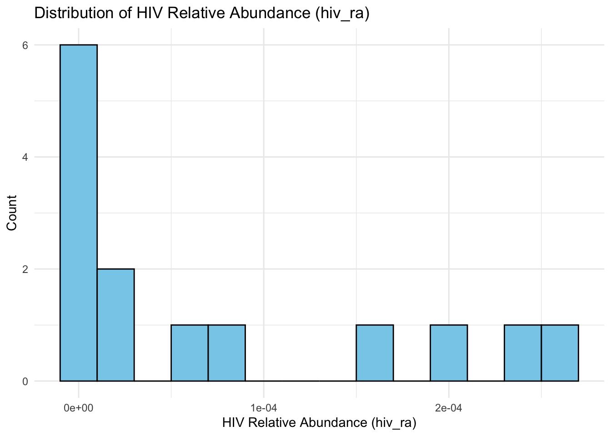

Code
library(tidyverse)A brief introduction
I’d like to thank Dan and Simon for our conversations about cost modeling. This work heavily draws from Simon’s blog post on pooled nasal swabs.
We’d like to estimate the cost of running a blood biosurveillance system in the US for a year that is capable of detecting a HIV like-pathogen at X% weekly incidence. Specifically, we want to know the sensitivity of blood to detect such a pathogen. For this model, my goal was to make the most simple solution, as this will be used in a perspective piece and will only take up one section of the main text (derivations would go in the appendix).
Before modeling, let’s consider the typical process of sequencing a virus within a population till we detect it:
Given this information, we make modeling decisions:
First, we assume that an HIV like-pathogen is at X% weekly incidence, growing exponentially with a doubling time of 355 days. We choose a weekly incidence as this is what has been done for the wastewater and nasal swab work (NB: They did this for viruses with acute infections, we may want to change this for our use-case). This pathogen is HIV like in that it has similar characteristics to HIV in-terms of transmission and shedding. Using the get_prevalence() function from the nasal swab post, which assumes exponential growth in the number of cases, we can derive the prevalence of this HIV like-pathogen:
\[\begin{align*} \text{growth factor} &= 2^{\frac{1}{\text{doubling period days}}} \\ \text{weekly growth} &= \text{growth factor}^{\text{days in week}} \\ \text{prevalence} &= \text{weekly incidence} \times \frac{\text{weekly growth}}{\text{weekly growth}-1} \end{align*}\]
Second, we estimate the expected relative abundance of the HIV like-pathogen for an infected person by using existing metagenomic sequencing data from people with HIV (NB: this should become “people early in their infection with HIV” once we change the data). We call this the i2ra ratio.
We look for studies where 1) people were confirmed to be HIV positive, 2) these individual’s samples were sequenced separately, 3) they provide the number of HIV reads, along with the total sequencing depth, and 4) optionally, they are early in their infection of HIV. We prefer the studies where they provide this information in a table, as it’s the fastest to process, and doesn’t require us running their data through our pipeline (NB: we will need to highlight the differences between the studies methods if we decide to go with multiple). In the case that we analyze multiple datasets (which is probably likely), we would want to account for the fact that the datasets use different methods and correct for that (it would be good to factor in large error bars), or analyze them separately, similar to how p2ra does it.
Third, we assume that we’ll be running sequencing on pooled samples. This will be cheaper than individual samples, and in some cases in the real world, we may not be able to get the samples individually.
We estimate our annual cost by breaking the weekly cost into two parts, 1) sequencing based costs, and 2) per-sample collection cost, then summing them over all the weeks in a year:
\[\begin{align*} \text{Total cost per week} &= \\ & \underbrace{\text{sequencing depth} \times (\text{cost of sequencing} + \text{cost of processing})}_{\text{Sequencing based costs}} + \\ &\underbrace{\text{cost of single sample} \times \text{number of samples}}_{\text{Per-sample collection cost}} \\ \text{Total cost per year} &= \text{Total cost per week} \times 52 \end{align*}\]
where:
The pool size will play a major role in our ability to detect this HIV like-pathogen. Of these other variables, the main one that we will need to derive is sequencing depth. The rest can be collected from the literature or other sources. I first introduce some notations:
Given this notation along with a user-defined pool size (number of individuals in a sample) and detection threshold (number of reads necessary to say the HIV like-pathogen is detected), we can find the sequencing depth to detect our HIV-like pathogen using the following equation:
\[ n = \frac{d}{(\frac{i}{ps}) \times i2ra}\]
Since there are some non-deterministic factors that will affect the sequencing depth, we’ll run multiple simulations to calculate our sequencing depth, which will then provide us with a distribution of sequencing depths. We can then use the median sequencing depth in the “Total cost per week” equation above (NB: one thing to add is confidence intervals to this estimate).
Below I discuss how to calculate the i2ra ratio using pre-existing untargeted metagenomic sequencing data from people with HIV, then show how to calculate the sequencing depth using the i2ra ratio.
To estimate the i2ra rato for our HIV-like pathogen, we can take an existing untargeted metagenomic sequencing study that was done on people with confirmed HIV and find the HIV relative abundance by diving the HIV read count by the total read count for those with HIV(before cleaning of course). We can then plot the distribution of HIV relative abundance individuals and find the average HIV relative abundance over those individuals with HIV to get our i2ra ratio:
\[ i2ra = \frac{1}{M} \sum_{m \in \text{HIV individuals}}^M \frac{m_{\text{HIV read count}}}{m_{\text{Total read count}}} \]
Estimating sequence depth requires 1) estimating the number of infected people in the pool, 2) calculating the relative abundance of HIV in those pools, and 3) using the read threshold with the relative abundance to get the sequencing depth.
Instead of simply multiplying prevalence by pool size, which can misleadingly suggest zero infections when prevalence is low (e.g., with 1% prevalence in a pool of 50, the average is 0.5, not 0, however we cannot have 0.5 people infected), we use the Poisson distribution as it provides a more realistic model by calculating the probabilities of finding different numbers of infected individuals in the pool as rare, independent events. This approach is particularly useful when dealing with large pools and low infection rates. Hence the number of infected people in a pool can be represented by:
\[ i \sim Poisson(\lambda=pr \times ps) \]
We calculate the relative abundance of the pool by applying the i2ra factor to the fraction of the pool that is infected:
\[ ra = \frac{i}{ps} \times i2ra \]
NB: We may want to take a more rigorous approach here by using a distribution to model the relative abundance of the pathogen. More details on this can be found in the section labeled improvements.
To figure out sequencing depth, we can divide the read threshold by the relative abundance of the pathogen in the pool:
\[ n = \frac{d}{ ra } \]
To test the validity of the model, and get some initial results, I decided to analyze one study. This study looked at how AIDS alters the plasma virome (NB: for the final dataset(s) we’re going to focus on people earlier on in HIV infection status; see the section labeled “Consider the timing of infection in the i2ra estimate” under the “Improvements” header to understand why), and it is a perfect candidate according to the reasons I laid out above, namely that it fits all three criteron, and this information can be found in Table 1 of the paper. For this analysis, I only analyzed the samples of all people not on ART, since it appears to change the rate of HIV nucleic acid found in blood, which may make the HIV read count lower than it actually is. Additionally, I use the standardized viral count for HIV that they provide in Table 1, we will probably want the unstandardized viral count if we do decide to move forward with this dataset.
library(tidyverse)# Define function to calculate read depth, and store some summary statistics
# 1. Use poisson distribution to estimate the number of infected people
# 2. Calculate ra based on infected people in pool
# 3. Calculate total number of reads for detection
find_seq_depth <- function(prevalence, i2ra_factor, pool_size, detection_threshold, simulations) {
results <- data.frame(
n_infected = numeric(simulations),
expected_ra = numeric(simulations),
required_depth = numeric(simulations)
)
for (i in 1:simulations) {
n_infected <- rpois(1, pool_size * prevalence)
if (n_infected == 0) {
# Can't divide by 0
expected_ra <- 1e-15
} else {
expected_ra <- (n_infected / pool_size) * i2ra_factor
}
required_depth <- detection_threshold / expected_ra
results$n_infected[i] <- n_infected
results$expected_ra[i] <- expected_ra
results$required_depth[i] <- required_depth
}
finite_depths <- results$required_depth[is.finite(results$required_depth)]
summary_stats <- list(
mean_infected = mean(results$n_infected),
median_infected = median(results$n_infected),
zero_pools_pct = 100 * mean(results$n_infected == 0),
mean_ra = mean(results$expected_ra[results$n_infected > 0]),
median_ra = median(results$expected_ra[results$n_infected > 0]),
mean_depth = mean(finite_depths),
median_depth = median(finite_depths),
depth_95pct = quantile(finite_depths, 0.95),
depth_ci_lower = quantile(finite_depths, 0.025),
depth_ci_upper = quantile(finite_depths, 0.975),
depth_iqr_lower = quantile(finite_depths, 0.25),
depth_iqr_upper = quantile(finite_depths, 0.75)
)
return(list(results = results, summary = summary_stats))
}
# Calculate total cost
find_total_cost <- function(seq_depth, cost_of_seq, cost_of_proc, cost_of_sample, num_samples) {
return(seq_depth * (cost_of_seq + cost_of_proc) + cost_of_sample * num_samples)
}To transfer the data from the paper (Table 1) to a tsv file, I copy pasted the text into Gemini and asked it to format the data as a tsv file. Should we continue with this study, I may provide more information on the sample processing, etc, that they used.
# load in data
data <- read_csv("../data/hiv-data.csv")Rows: 35 Columns: 15
── Column specification ────────────────────────────────────────────────────────
Delimiter: ","
chr (4): Subject identifier, ART, HIV load (RNA copies/ml), Gender
dbl (8): CD4+ count (cells/μl), Age, Anellovirus, HIV, GBV-C, HCV, HERV-K, HERV
num (3): Total no. of reads, No. of unique reads, HBV
ℹ Use `spec()` to retrieve the full column specification for this data.
ℹ Specify the column types or set `show_col_types = FALSE` to quiet this message.# select columns of interest
our_data <- data %>% select("HIV", "HIV load (RNA copies/ml)", "Total no. of reads", "No. of unique reads", "ART")
our_data <- our_data %>% rowid_to_column("sample_id")
# subset to patience of interest and calculate ra of hiv
our_data <- our_data %>% filter(ART == "No") %>% mutate("hiv_ra" = HIV / `Total no. of reads`)
ggplot(our_data, aes(x = hiv_ra)) +
geom_histogram(binwidth = 0.00002, color = "black", fill = "skyblue") +
labs(
title = "Distribution of HIV Relative Abundance (hiv_ra)",
x = "HIV Relative Abundance (hiv_ra)",
y = "Count"
) +
theme_minimal()
# Find the i2ra factor by taking the average of hiv ra over all HIV people.
i2ra <- our_data %>% summarize(mean = mean(hiv_ra)) %>% pull(mean)Of the 35 subjects in this study, all of whom have HIV, I only analyzed the 14 that were not taking ART. Of those 14 people, 4 people had undetectable levels viral nucleic acid present in their blood. Using all 14 people (including those with undetectable levels of HIV viral nucleic acid), and taking the arithmetic mean (NB: will use geometric mean going forward), we get an i2ra factor of 7e-5.
Using a 1% weekly incidence with a doubling rate of 362 days (see Appendix: Doubling rate per day for HIV-like pathogen), we get a prevalence of ~75% (nb: this is quite high, for covid-19 it was 1.2% at a 3 day doubling rate; this is a bit unintuitive for me). We can then set the read threshold of detection to be 100, try a pool size of 100, and run 1000 runs of the simulation. This gives us a required median sequencing depth of about 1.79 × 10^6 or ~1.79 million reads per week.
static_prevalence <- FALSE
if (static_prevalence) {
prevalence <- 0.01
} else {
# Inherent to pathogen
doubling_period_days <- 362
# We set this
weekly_incidence <- 0.01
get_prevalence <- function() {
days_in_week <- 7
growth_factor <- 2 ^ (1 / doubling_period_days)
weekly_growth <- growth_factor ^ days_in_week
prevalence <- weekly_incidence * (weekly_growth) / (weekly_growth - 1)
return(prevalence)
}
prevalence <- get_prevalence()
}
prevalence[1] 0.7510906pool_size <- 100
detection_threshold <- 100
number_of_simulations <- 1000
# Get sequencing depth
seq_depth_results <- find_seq_depth(
prevalence = prevalence,
i2ra_factor = i2ra,
pool_size = pool_size,
detection_threshold = 100,
simulations = number_of_simulations
)
seq_c <- 2500 / 1e9
proc_c <- 2500 / 1e9
seq_depth <- seq_depth_results$summary$median_depth
seq_depth[1] 1792478weekly_cost <- find_total_cost(
seq_depth = seq_depth,
cost_of_seq = seq_c,
cost_of_proc = proc_c,
cost_of_sample = 100,
num_samples = pool_size
)
yearly_cost <- weekly_cost * 52
yearly_cost[1] 520466To calculate the total cost, we use the numbers from the p2ra paper for the sequencing cost and processing costs, which comes out to be about $2500 each for 1 billion read pairs. For the blood sample costs, I use the higher end of our estimate, which puts us at about $100 per sample. Plugging this into our equation with the sequencing depth, we get a cost of about $520K per year.
Hence, given a read threshold of 100, a pool size of 100, and a weekly incidence of 1%, it would cost about 520k per year to detect an HIV-like pathogen.
From Lenni:
I think this mostly makes sense but one nuance to consider here is timing of infection. If we want to detect an HIV-like pathogen early, most people will be donating early in the course of infection. HIV has very different shedding dynamics depending on time. Averaging over these states seems mostly reasonable but ideally we’d find people early in the course of infection, asymptomatic, and not taking anti-virals
Right now we simulate sampling once a week. Lenni suggested that we may want to sample more than this (e.g. 2x-3x per week), it would be to figure out what would need to change to allow for this.
This would be nice to have.
We will most likely want to get more data for estimating the i2ra factor.
It would be nice to see how pool size and weekly incidence affect the cost. We could make a plot similar to what is done in the p2ra paper.
If we wanted to model an outbreak, it would be better to assume a non-constant prevalence.
Right now we use weekly incidence as this is what both the nasal swab and wastewater paper do. We will want to decide whether this is good for us.
You may have noticed that I look at the median sequencing depth instead of the mean sequencing depth from the simulation. This is because we often have 0 infected people in the pool, however this leads to issues as, we cannot divide by 0. We may decide to model the relative abundance of the pool as a distribution similar to Simon’s nasal swab work.
Double check all the numbers, and make sure they make sense.
Just for a sanity check, we can set the seq_depth to be 8e5. This is similar to norovirus example in P2RA paper.
Rothman relative abundance for norovirus GII seems to be about 1e-4.
The number of reads required varies substantially between different viruses and studies. For untargeted sequencing, we find that detection at 1% cumulative incidence, with a read threshold of 100 reads, requires 8·7 × 10^5 … sequencing reads for norovirus GII Rothman. At 1% TCI, the predicted annual cost to detect a GII norovirus-like pathogen under Rothman … was $52,200.
seq_c <- 2500 / 1e9
proc_c <- 2500 / 1e9
seq_depth <- 8e5
weekly_cost <- find_total_cost(
seq_depth = seq_depth,
cost_of_seq = seq_c,
cost_of_proc = proc_c,
cost_of_sample = 10,
num_samples = pool_size
)
yearly_cost <- weekly_cost * 52
yearly_cost[1] 52208This gives us a similar cost, of about 52k per year, so we know that our cost modeling is not too far off.
For the purpose of epidemiological modeling, a crucial parameter is the doubling time—the time it takes for the number of infected individuals to double. To establish a scientifically-grounded value for a new, HIV-like pathogen, we must look to the early phase of the HIV epidemic in the 1970s and 1980s, before widespread awareness and effective treatments altered its natural course.
The standard epidemiological formula for this calculation is:
\[T_d = \frac{\ln(2)}{r}\]
Where:
T_d is the doubling time for the year.r is the intrinsic growth rate of the epidemic per year.ln(2) is the natural logarithm of 2, a constant approximately equal to 0.693.Luckily, a 2016 study from Nature, titled “1970s and ‘Patient 0’ HIV-1 genomes illuminate early HIV/AIDS history in North America”, found a range for this. The researchers empirically calculated the doubling time (T_d) to be 0.86 -> 1.12 years.
We can take the arithmetic mean of this to get:
\[T_d = 0.99 \text{ years}\]
Converting this to days gives us our final, justifiable figure:
\[0.99 \text{ years} \times 365 \frac{\text{days}}{\text{year}} \approx \textbf{362 days}\]
Based on the most direct empirical evidence from the early HIV epidemic, the justifiable doubling time for a new, unchecked HIV-like pathogen is approximately 362 days.
For context, this is fundamentally different from a rapidly spreading respiratory virus. Wild-type SARS-CoV-2, for example, had a doubling time of approximately 3 days at the beginning of the pandemic. This stark contrast underscores the slow, persistent transmission dynamic of an HIV-like pathogen compared to the explosive growth of an airborne disease.
NB: It looks like we’re just undoing this calculation to get the growth rate to calculate prevalence, I should double check this.